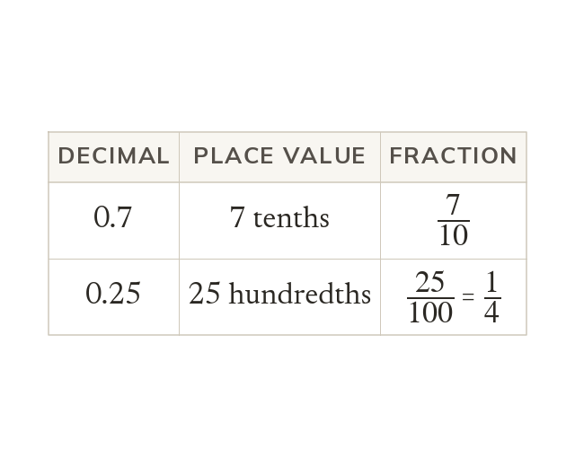

Place value gives the fraction
Read a decimal's place value to write its fraction: 0.7 is 710. Divide numerator by denominator to get a decimal.
A decimal converts to a fraction by reading its place value, so 0.7 is 710 and 0.25 is 25100. A fraction converts to a decimal by dividing its numerator by its denominator.